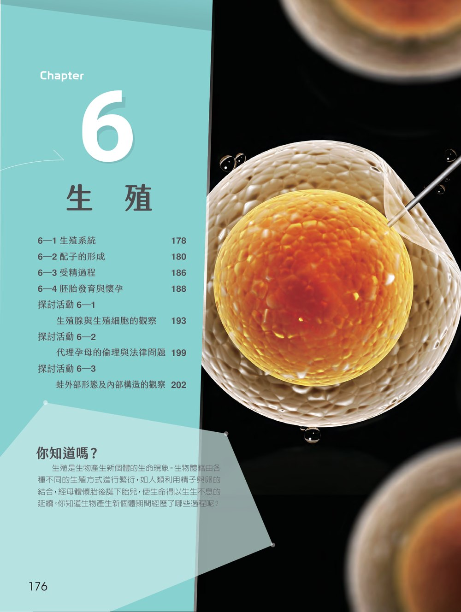

6-1優化版｜生殖器官奧秘館課本 P.178–179
生殖系統
男性生殖系統包括睪丸、副睪、輸精管、儲精囊、攝護腺、尿道球腺、陰莖與陰囊：睪丸的細精管產生精子，間質細胞分泌睪固酮，精子在副睪成熟，再與腺體分泌物混合成弱鹼性的精液。女性生殖系統由卵巢、輸卵管、子宮與陰道組成：卵巢內的濾泡分泌動情素，排出的次級卵母細胞進入輸卵管，通常在此受精；子宮是囊胚著床與胚胎發育的場所。
點選文字即可開啟優化版教學網頁本節重點
- 6-1.1 男性的生殖系統
- 6-1.2 女性的生殖系統
生殖讓生命得以延續。本章認識男性與女性的生殖系統、精子與卵的形成以及女性生殖週期的激素調控，接著觀察受精作用的過程，最後追蹤胚胎從卵裂、著床到懷孕與分娩，並了解產前遺傳篩檢的意義。

男性生殖系統包括睪丸、副睪、輸精管、儲精囊、攝護腺、尿道球腺、陰莖與陰囊：睪丸的細精管產生精子，間質細胞分泌睪固酮，精子在副睪成熟，再與腺體分泌物混合成弱鹼性的精液。女性生殖系統由卵巢、輸卵管、子宮與陰道組成：卵巢內的濾泡分泌動情素，排出的次級卵母細胞進入輸卵管，通常在此受精；子宮是囊胚著床與胚胎發育的場所。
點選文字即可開啟優化版教學網頁精原細胞經有絲分裂與分化成為初級精母細胞，經減數分裂產生四個精細胞，再分化為具頭部（頂體與細胞核）、中節（粒線體）與鞭毛的精子。女性在出生前初級卵母細胞即停在減數分裂第一階段前期，青春期後每月通常只有一個完成第一階段而排出次級卵母細胞，受精後才完成第二階段，且細胞質不均等分裂形成極體。卵巢週期與子宮週期受下視丘、腦垂腺與卵巢激素的回饋調控。
點選文字即可開啟優化版教學網頁受精作用通常發生在輸卵管前端。精子先穿過次級卵母細胞外層的放射冠，頭部的頂體分泌頂體蛋白溶解透明帶；當一隻精子的細胞膜與次級卵母細胞融合時，卵母細胞表面結構隨即改變，阻止其他精子進入以避免多重受精。之後次級卵母細胞完成減數分裂第二階段，精核與卵核結合形成受精卵。
點選文字即可開啟優化版教學網頁受精卵經卵裂形成囊胚，於受精後約 7～10 天著床於子宮內膜；內細胞團分化為外胚層、中胚層與內胚層，胚胎周圍則形成羊膜、絨毛膜、卵黃囊與尿囊四種胚外膜。第 9 週起進入胎兒期，母體與胎兒透過胎盤與臍帶交換氣體、養分與廢物，胎盤也分泌 hCG 等激素維持妊娠。分娩約在第 38～40 週發生；產前遺傳篩檢有助及早發現遺傳疾病。
點選文字即可開啟優化版教學網頁動手操作、記錄變因與數據，把課文中的概念轉化為自己的實驗證據。
以顯微鏡觀察鼠或兔的睪丸與卵巢永久玻片標本：在細精管由管壁到管腔排列不同發育階段的生殖細胞，推論精子的生成順序；在卵巢中比較不同大小的濾泡、濾泡腔與卵母細胞，推論卵的發育過程。
開啟優化版教學網頁從試管嬰兒與生殖輔助醫學出發，閱讀印度、泰國代理孕母的案例，比較法國、德國、英國、美國加州等地不同的立法態度，以及我國人工生殖法的立法過程，分組討論代理孕母在倫理、法律、心理與宗教層面的爭議。
開啟優化版教學網頁遵循動物實驗 3R 原則，以丁香油溶液麻醉蛙後，先觀察外部形態並判斷雌雄，再依序解剖觀察循環、消化、呼吸、泌尿與生殖系統的構造與相對位置，並與人體的器官系統比較，連結其生理功能與生態習性。
開啟優化版教學網頁